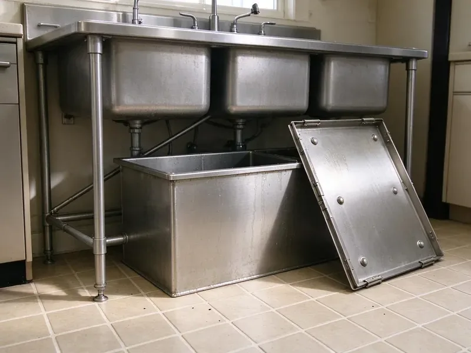

Garbage Disposal Replacement in Beaverton, OR
Upgrade to a modern garbage disposal in Beaverton, OR with a clean install and a strong warranty.
- Same-Day Disposal Replacement
- Upfront Pricing
- Quality Parts
- Fast, Same-Day Service
Get Your Garbage Disposal Replaced Today in Beaverton, OR.
Contact us today for a free estimate and let our licensed plumbers handle your garbage disposal replacement needs.
Trusted Garbage Disposal Replacement for Beaverton, OR Homeowners
JFL Plumbing helps Beaverton homeowners pick replacement disposals that fit their kitchen and budget. Many people upgrade to quieter units with more grinding power. We handle the full swap and haul away the old unit.
Our expertise includes:
- Upgrading worn-out or broken disposals
- Replace sink flanges, mounts and discharge tubes as needed
- Wiring and plumbing hookup know-how.

Additional Kitchen Plumbing Services in Beaverton, OR
Our kitchen plumbing services in Beaverton, OR cover sinks, disposals, dishwashers, and grease traps so your kitchen stays clean, safe, and fully functional.


Customers
Why Choose JFL Plumbing for Garbage Disposal Replacement in Beaverton, OR?
Our commitment to quality service and customer satisfaction makes the difference, delivering a reliable and long-lasting garbage disposal replacement for your Beaverton home.
- Quick Swaps, Most replacements are done in about an hour.
- Correct Sizing, Our plumbers help you pick the right horsepower, from 1/3 HP to 1 HP, based on your household's needs and usage.
- Code Compliance, All replacements adhere to local Beaverton, OR plumbing codes, ensuring safe and legal operation.
Citywide Coverage
We replace garbage disposals in homes throughout Beaverton, from older kitchens to newer builds. Same-day service is available most days.
Experienced Team
Our team replaces disposals every day and knows how to swap brands and mounting systems. They can handle tight cabinets and tricky drain layouts.
Safety-First Approach
We always adhere to strict safety protocols and local plumbing codes during every garbage disposal replacement. This means your new unit operates safely and reliably for years to come in Beaverton, OR.
Trusted Certified Beaverton Plumbing Services Professionals
At JFL Plumbing, we take pride in providing certified plumbing services throughout Beaverton, OR. Backed by leading industry credentials, our experienced plumbers combine technical skill with genuine customer care. Whether it is repair, installation, or maintenance, we follow strict safety and quality standards to deliver long-lasting results you can trust.
Call Us Now PHCC Plumbing Contractor Recognition
PHCC Plumbing Contractor Recognition Better Business Bureau (BBB) Accreditation
Better Business Bureau (BBB) Accreditation Angi Certified Pro
Angi Certified Pro ISO 9001 Quality Management Certification
ISO 9001 Quality Management CertificationReliable Garbage Disposal Replacement Services in Beaverton, OR
InSinkErator Replacement in Beaverton, OR
If you already have an InSinkErator, replacement is usually quick because the mounting system often matches. We can upgrade from a Badger to an Evolution model for quieter operation and better grinding. We follow the brand's specs for wiring and drains. We also register the warranty on your behalf.

Cost-Effective Garbage Disposal Replacement Options in Beaverton
We understand that cost is a factor for many Beaverton homeowners. JFL Plumbing offers various garbage disposal replacement options to fit different budgets without compromising on quality. We can discuss entry-level, mid-range, and premium models, outlining the benefits and costs of each. Our goal is to provide a reliable replacement that meets your needs and budget, offering honest, upfront pricing for all services.
Emergency Disposal Replacement in Beaverton
A completely broken garbage disposal can lead to a blocked sink, especially if it's leaking or grinding loudly without processing waste. For urgent situations, JFL Plumbing offers emergency garbage disposal replacement services in Beaverton. We put a priority on these calls to prevent further kitchen plumbing issues, arriving quickly to remove the faulty unit and install a new one, getting your sink back in working order as soon as possible.
InSinkErator Garbage Disposal Replacement in Beaverton
InSinkErator is a leading brand, and JFL Plumbing is experienced in replacing all their models, from the Badger series to the Evolution series. If your InSinkErator unit is failing, we can promptly replace it with a new one, often with minimal adjustments due to consistent product design. We carry common InSinkErator models or can source your preferred unit efficiently for replacement in your Beaverton home. Our plumbers are familiar with their specific mounting systems and electrical requirements.
Cost-Effective Disposal Replacement in Beaverton, OR
While replacing a garbage disposal is an investment, JFL Plumbing aims to provide cost-effective solutions for Beaverton, OR homeowners. We offer transparent pricing and help you choose a new unit that fits your budget without compromising on quality or performance. Sometimes, repairing an old, inefficient unit can cost more in the long run than installing a new, energy-efficient model with a fresh warranty. We provide clear options to help you decide.
Waste King and Moen Disposal Replacement in Beaverton, OR
While InSinkErator is popular, we also often replace Waste King and Moen brand garbage disposals in Beaverton, OR. Waste King units are often favored for their value and EZ-Mount system, while Moen offers competitive features and warranties. Our technicians are familiar with the specific installation requirements for each brand, ensuring your new disposal is installed according to manufacturer guidelines for strong performance and longevity.
Standard Garbage Disposal Replacement in Beaverton
When your existing garbage disposal fails due to wear and tear, a standard replacement is often the most cost-effective solution. We remove the old unit, carefully clean the connection points, and install a brand-new disposal, ensuring proper alignment with the sink drain and secure electrical connections. This service typically takes a few hours and restores full function to your kitchen sink. We confirm no leaks are present before considering the job complete.

Old Unit Removal and New Installation in Beaverton, OR
Our complete service includes the complete removal and proper disposal of your old, defunct garbage disposal unit. Following removal, we carefully install your new chosen model, ensuring all plumbing and electrical connections are made safely and correctly. We test the new unit carefully to confirm proper operation and clean up the work area before we leave your Beaverton, OR home. You won't have to worry about anything.
Garbage Disposal Replacement Near Me in Beaverton, OR
When your disposal fails, you need a replacement fast. Our team works in Beaverton every day and carries popular models. Most replacements are finished in about an hour.
Looking for 'garbage disposal replacement near me' in Beaverton, OR? JFL Plumbing is your local expert, offering fast and reliable service. Our technicians are familiar with the common plumbing configurations found in homes throughout the area, ensuring a smooth replacement process.
JFL Plumbing at a Glance
- Fully licensed plumbing team covering Beaverton, OR
- 24/7 emergency service with same-day scheduling
- Upfront, flat-rate pricing before work begins
- 4.8-star rated by 657+ Oregon customers
Beaverton Map
Beaverton Information
- Population
- 96,945
- Area codes
- 503/971/509
- Service area
- Beaverton and communities within 40 miles
- Nearby
- Aloha, Tigard, Bethany, Hillsboro
Many rural homes rely on private wells, and owners around Beaverton benefit from testing for iron, hardness and other common concerns. A proper garbage disposal replacement in Beaverton, OR helps protect against early wear and keeps kitchen drainage flowing.
Expert Services
Trust our professionals for reliable JFL Plumbing solutions in Beaverton, OR.
Our Specialized Plumbing Services in Beaverton, OR
At JFL Plumbing, we provide a complete range of plumbing services across Beaverton, OR. From leak detection to full system installations, our team ensures fast, precise, and affordable service for both residential and commercial properties. Explore our core services below:


How Our Garbage Disposal Replacement Process Works in Beaverton, OR
Our garbage disposal replacement process in Beaverton, OR is designed to be straightforward and efficient, minimizing disruption to your home.
Request a Quote
Call (971) 333-7694 and tell us about your current disposal. We help you choose a replacement and schedule the install.
Remove Old Unit
We cut power, disconnect the drain and remove the old disposal. Then we inspect the flange, mount and cabinet floor.
Install and Test
We install the new disposal, reconnect drains and wiring, and test it with water. We check for leaks and take away the old unit.
Frequently Asked Questions About Garbage Disposal Replacement in Beaverton
The cost for garbage disposal replacement in Beaverton, OR usually ranges from $200 to $600. This includes the new unit itself, which can vary from $100 for a basic 1/3 HP model to over $300 for a high-end 1 HP unit, plus labor costs. Factors like the disposal's horsepower, brand, and any necessary plumbing modifications can affect the final price.
If your current disposal jams often or struggles with food waste, a 3/4 or 1 HP model can make a real difference.
Most disposals last 8 to 12 years. Hard water, heavy use and grease can shorten that life.
To prolong the life of your new disposal, avoid putting fibrous foods like celery, corn husks, or onion skins down it. Also, do not dispose of grease, coffee grounds, or non-food items. Always run cold water before, during, and after use, and grind small amounts of citrus peels or ice cubes now and then to clean the unit.
Yes. We remove and dispose of your old unit as part of the replacement.
In most cases, a simple like-for-like garbage disposal replacement in Beaverton does not require a permit. However, if significant plumbing modifications or electrical work beyond a simple swap are needed, a permit might be required. We'll advise you if this is the case.
Leaks from the body, frequent resets, constant jams, loud grinding and age over ten years are the most common signs.
Yes. We can install a new brand and update the mount and flange when needed.
What People Are Saying About Our Plumbing Experts?

James P.
Our commercial plumbing system had a leak under the sink, and JFL Plumbing handled it professionally. The plumbers arrived quickly and restored everything without disruption to our customers.
Commercial Plumbing · Beaverton, OR
Emily R.
I called JFL Plumbing for plumbing repair, and the technician was fast, polite, and thorough. They explained the problem clearly and fixed it the same day. I will definitely hire them again. Highly recommended!
Plumbing Repair · Beaverton, OR
Mark T.
When our office needed drain cleaning, JFL Plumbing provided quick, reliable service. The plumber arrived on time and made sure every drain flowed perfectly before leaving. Very satisfied.
Drain Cleaning · Beaverton, OR
Daniel K.
A pipe burst at 11 pm and they actually answered. The plumber showed up within the hour, shut everything down, and had us back to normal the next morning. Could not ask for more.
Emergency Plumbing · Hillsboro, ORRobert G.
The trenchless sewer replacement saved our front yard. They walked us through the camera inspection footage first so we knew exactly what we were paying for.
Sewer Line Replacement · Tigard, OR
Sofia M.
Two new toilets installed in one visit, no mess left behind, and the tech even adjusted a faucet he noticed was dripping. Fair pricing and really friendly.
Toilet Installation · Tigard, OR